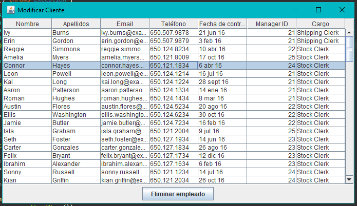
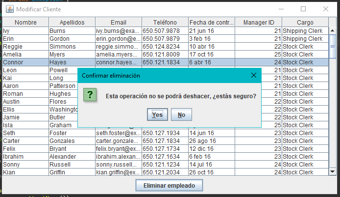
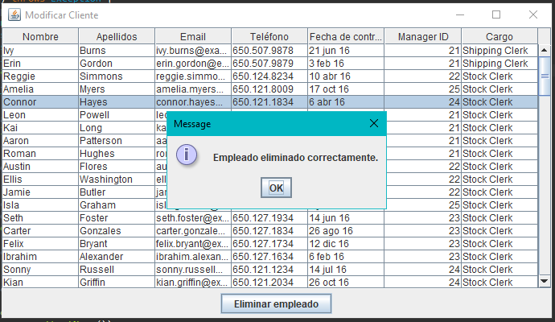

⬅ Volver al índice
Ejercicio 5 - Eliminar Empleado
📌 Objetivo
Permitir al usuario eliminar empleados registrados en la base de datos de
forma sencilla desde una tabla.
🧠 ¿Qué hace este ejercicio?
Muestra una tabla con todos los empleados. El usuario puede seleccionar
uno y pulsar el botón “Eliminar empleado”. Antes de eliminar, el programa
pide confirmación al usuario para evitar errores.

▶️ Pasos para eliminar un empleado
- El usuario abre la pantalla de empleados desde el menú principal.
- Selecciona un empleado de la lista.
- Se activa el botón "Eliminar empleado".
- Al pulsar el botón, se muestra un aviso pidiendo confirmación.
- Si el usuario acepta, el empleado se elimina de la base de datos.
- Se muestra un mensaje de éxito.

✅ Validaciones
- Solo se puede eliminar si se ha seleccionado un empleado.
-
Antes de eliminar, el programa pregunta al usuario si está seguro.
- Si no se confirma, no se hace nada.

🔚 Conclusión
Este ejercicio permite gestionar fácilmente los empleados desde una
interfaz. La funcionalidad es segura ya que siempre se pide confirmación
antes de eliminar y se informa al usuario si ha sido correcto.